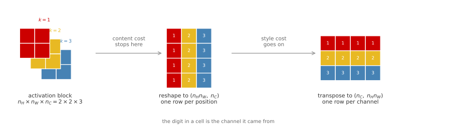
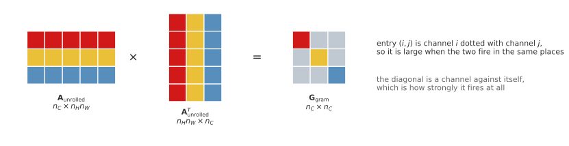
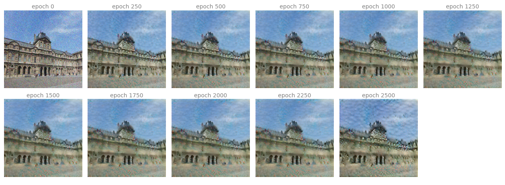
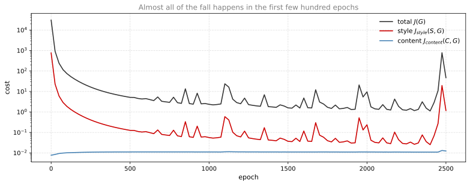
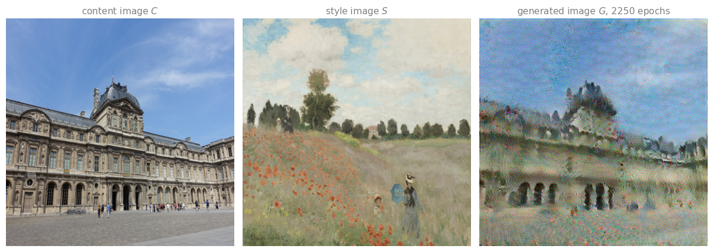

Write the content cost, the Gram matrix and the style cost in TensorFlow, then run gradient descent on the pixels of an image until a photograph of the Louvre comes back repainted by Monet.
Published
Aug 21, 2026
ImportantFive changes from the original notebook
The assignment was written against TensorFlow 2.3 with Keras 2, and this page runs on TensorFlow 2.21 with Keras 3. Five things changed (updated 2026-08-31).
VGG-19 is loaded with weights='imagenet' rather than from a local .h5 path, so Keras fetches and caches it.
The content photograph and the style scan were substituted for images that can be redistributed with this site.
Only 22 optimization steps run at render time. The full 2501-step run is done offline and its result is shown as a stored image, because the full run takes far too long for a page build.
The displayed result is the snapshot at step 2250 rather than the notebook’s final one, because it is the better looking image of the run.
Outputs that depend on random initialization changed, since the generated image starts from a noisy copy of the content image.
The VGG-19 layer choices, the content and style cost functions, the Gram matrix construction and the optimizer settings are the assignment’s own.
Neural Style Transfer defined the two costs and showed what they do. This lab writes them out.
Five short functions carry the whole algorithm. compute_content_cost compares one layer’s activations between two images, gram_matrix turns a block of activations into a table of channel correlations, compute_layer_style_cost compares two such tables, compute_style_cost weights that across several layers, and total_cost adds the two terms. A sixth, train_step, is where the unusual part lives. The gradient is taken with respect to the image rather than the weights.
Nothing here is trained in the ordinary sense. VGG-19 arrives pretrained and frozen, and stays frozen. The only thing that changes across the run is the 480,000 numbers of a \(400 \times 400\) color image.
NoteLab Files Download
Only the two input photographs need downloading. The VGG-19 weights are fetched by Keras the first time the model is built and cached under ~/.keras/models, so there is no weight file to hunt down, and no Google Drive link to follow.
The generated images shown further down were produced by the code on this page, run once offline for the full 2500 epochs, and are embedded in the figures rather than offered as separate downloads. media/deep-learning/neural-style-transfer-lab/README.txt in the repository records the exact settings, the licenses, and why the page does not spend eleven minutes optimizing every time it is rendered.
NoteSubstituted Content Image
The original assignment uses a photograph of the glass pyramid in the Louvre courtyard. That picture cannot be republished here. The pyramid is I. M. Pei’s architecture, he died in 2019, and France grants no freedom of panorama that covers commercial reuse, so a photograph of it is a derivative of a work still in copyright no matter how the photographer licenses their own shot. Wikimedia Commons says as much on the category itself, warning that it holds “a copyrighted architecture and/or artistic work from a public space in a country that does not provide Wikimedia Commons-acceptable freedom of panorama”.
The substitute is the west facade of the Cour Carrée, the sixteenth to nineteenth century palace that surrounds the pyramid, which is long out of copyright. It is still the Louvre, still Paris, still ornate stone under a cloudy blue sky, so it behaves the same way under the algorithm. The style image is the same Monet the assignment uses, Poppy Field of 1873, taken from a public domain scan rather than from the course archive.
Packages
TensorFlow does the work, PIL loads the two photographs, and Matplotlib shows them. Nothing else is needed.
import osos.environ["TF_CPP_MIN_LOG_LEVEL"] ="3"# quiet TensorFlow's startup loggingimport numpy as npimport matplotlib.pyplot as pltfrom PIL import Imageimport tensorflow as tfLAB ="../../../media/deep-learning/neural-style-transfer-lab/"img_size =400tf.random.set_seed(272) # fixes the noise the generated image starts fromprint("TensorFlow", tf.__version__)print("Keras", tf.keras.__version__)
TensorFlow 2.21.0
Keras 3.15.0
Pretrained Network
The network is VGG-19, the 19 layer version of the architecture from the Visual Geometry Group at Oxford, trained on ImageNet. It is the network the original style transfer paper used, and the reason it is used here is the one Practical Advice for ConvNets gives for transfer learning generally: somebody has already paid for the expensive part, which is learning what images look like.
include_top=False drops the classifier, because a probability over 1000 ImageNet classes is of no use here. What is wanted is the activations partway through. weights='imagenet' triggers a one-time 80 MB download into ~/.keras/models, and trainable = False freezes every filter, which is the state they stay in for the rest of the lab.
Every layer has a name, and those names are how activations get pulled out later. The convolutions follow the pattern block{i}_conv{j}, so block3_conv2 is the second convolution of the third block. The pooling layers and the input placeholder are in the list too, and none of them is ever asked for.
Each block halves the height and the width and roughly doubles the channel count. Asking a layer for its output shape shows where in that progression it sits.
for name in ('block1_conv1', 'block3_conv1', 'block5_conv4'):print(f"{name:14}{vgg.get_layer(name).output.shape}")
block5_conv4 is the deepest convolution in the network. A \(400 \times 400\) input has become \(25 \times 25\) with 512 channels, which is 320,000 numbers describing what is in the picture. It has given up fine, pixel-level position while keeping a coarse \(25 \times 25\) map of roughly where things sit. That surviving arrangement is exactly what the content cost relies on, since it compares the two activations position by position. That is the layer the content cost will use.
Review Questions
1. The classifier head is dropped and every remaining filter is frozen. What, then, is the network for?
TipAnswer
It is being used as a measuring instrument, not as a predictor. Style transfer needs a way to say how similar two images are in content and how similar they are in style, and raw pixel differences answer neither question. Pushing an image through a trained ConvNet and reading off an intermediate layer gives a description in terms of edges, textures and parts, which is a description in which those two questions can be asked. The weights are frozen because the instrument must not change while it is being used to measure.
1. Why does include_top=False matter here, beyond saving memory?
TipAnswer
The classifier head fixes the input size. VGG-19’s fully connected layers expect a specific number of incoming activations, so with the head attached the network only accepts \(224 \times 224\) inputs. Without it the network is fully convolutional and takes any size, which is what lets input_shape=(400, 400, 3) be chosen freely here. It also drops about 120 million of VGG-19’s 143 million parameters, since almost all of them live in that first dense layer.
Content Cost
The content cost compares one layer’s activations on the content image against the same layer’s activations on the generated image.
Both \(a^{(C)}\) and \(a^{(G)}\) are 3D blocks of shape \(n_H \times n_W \times n_C\). The sum runs over every entry of both, and the constant in front is a normalization so that the number does not grow simply because a layer is large.
The exercise asks for the blocks to be unrolled into 2D first. That is worth drawing, because the same unrolling comes back for the style cost with one extra step, and mixing up the two is the most common way to get this lab wrong.

The two reshapes this lab uses, on a block with \(n_H = n_W = 2\) and \(n_C = 3\). Both flatten the grid of positions into one axis. The style cost then transposes, so that a row is a channel rather than a position, because the Gram matrix multiplies channels against channels.
Now the function. It receives the full list of layer outputs rather than a single block, because the model built later returns every layer of interest at once, and the content layer is the last entry of that list. Hence the two [-1] lines at the top.
def compute_content_cost(content_output, generated_output):""" Computes the content cost. Arguments: content_output -- list of layer activations for the content image C generated_output -- list of layer activations for the generated image G Returns: J_content -- scalar tensor """ a_C = content_output[-1] a_G = generated_output[-1]# Retrieve dimensions from a_G _, n_H, n_W, n_C = a_G.get_shape().as_list()# Unroll both blocks. Do not reshape content_output or generated_output# themselves, only the single blocks pulled out of them. a_C_unrolled = tf.reshape(a_C, shape=[_, n_H * n_W, n_C]) a_G_unrolled = tf.reshape(a_G, shape=[_, n_H * n_W, n_C]) J_content = tf.reduce_sum(tf.square(a_C_unrolled - a_G_unrolled)) /\ (4.0* n_H * n_W * n_C)return J_content
Two small tensors are enough to see it work. The first number is the cost between two unrelated blocks. The second is the cost of a block against itself, which has to be exactly zero, because every squared difference in the sum is zero.
The zero is a weaker check than it looks. Any reshape applied to both sides gives zero, so it catches a missing square or a stray sign but says nothing about whether the axes were unrolled in the right order. In fact nothing here can, which is the subject of the first review question below.
Review Questions
1. Would compute_content_cost return a different number if the reshape were left out entirely?
TipAnswer
No. tf.reduce_sum adds up every entry of whatever it is given, and squaring is elementwise, so the sum of squared differences does not depend on how the entries are arranged. The reshape is there for readability and to match the picture, not because the arithmetic needs it. That is not true of the style cost, where the reshape decides which numbers get multiplied against which inside the Gram matrix, and getting it wrong silently produces the wrong matrix rather than an error.
1. The normalizing constant is \(4 n_H n_W n_C\). What goes wrong if it is dropped?
TipAnswer
The content term stops being comparable with the style term. Without it the cost grows with the size of the layer, so the same \(\alpha\) would mean something different at block2_conv1 than at block5_conv4, and the balance between content and style would silently change with the layer chosen. Dividing by the number of entries makes it a mean rather than a sum, so the number reports the typical squared disagreement per activation. The 4 carries no meaning at all. It is a constant inherited from the original paper, and since it multiplies the whole term it could be folded into \(\alpha\) without changing anything.
Style Cost
Gram Matrix
Style is measured by which channels tend to be active together, and that is what a Gram matrix records. Unroll the block so each row is one channel, then multiply the matrix by its own transpose.
Row \(i\) of \(A_{\text{unrolled}}\) is the list of every value channel \(i\) takes across the image, so entry \((i, j)\) of the product is the dot product of channel \(i\)’s list with channel \(j\)’s. That is large when the two fire in the same places and small when they do not.

The Gram matrix as one matrix multiplication. Each row of the unrolled block is one channel across every position, so each entry of the product is a dot product between two channels. The result is \(n_C \times n_C\) and symmetric, and it carries no trace of where in the image anything was.
In TensorFlow that is one line.
def gram_matrix(A):""" Argument: A -- matrix of shape (n_C, n_H*n_W) Returns: GA -- Gram matrix of A, of shape (n_C, n_C) """ GA = tf.matmul(A, tf.transpose(A))return GA
A three by two matrix stands in for three channels seen at two positions. The output is three by three, one row and column per channel, and it is symmetric, because the dot product of channel \(i\) with channel \(j\) is the same as the dot product of \(j\) with \(i\).
The function is the reshape from the diagram, then two Gram matrices, then the same sum-of-squares as the content cost. Note the transpose, which is the step the content cost did not need: after tf.reshape a row is a position, and tf.transpose turns it into a channel.
def compute_layer_style_cost(a_S, a_G):""" Arguments: a_S -- tensor of shape (1, n_H, n_W, n_C), activations for the style image S a_G -- tensor of shape (1, n_H, n_W, n_C), activations for the generated image G Returns: J_style_layer -- scalar tensor """# Retrieve dimensions from a_G _, n_H, n_W, n_C = a_G.get_shape().as_list()# Reshape from (1, n_H, n_W, n_C) to (n_C, n_H * n_W) a_S = tf.transpose(tf.reshape(a_S, shape=[n_H * n_W, n_C])) a_G = tf.transpose(tf.reshape(a_G, shape=[n_H * n_W, n_C]))# The style of each image, as a table of channel against channel GS = gram_matrix(a_S) GG = gram_matrix(a_G) J_style_layer = tf.reduce_sum(tf.square(GS - GG)) /\ (4.0* (n_C **2) * ((n_H * n_W) **2))return J_style_layer
Again two small blocks. A block against itself has to give zero, and two unrelated blocks give something positive.
The assignment prints 14.01649 for the first of those and 63.193256 for the top-left entry of GA above. Both come out slightly different here, in the fourth significant figure. The cause is not the arithmetic. tf.random.normal does not reproduce bit for bit across TensorFlow releases, so the random tensors being fed in are themselves marginally different; recomputing the Gram matrix from this A in NumPy float64 reproduces what TensorFlow printed, to every digit. Checked on 2026-08-21 against TensorFlow 2.21 and Keras 3.15. The content cost and the total cost below happen to match the original exactly.
Several Layers
One layer captures style at one scale. Five capture it at five, and the results are averaged with weights that sum to one.
The layers chosen are the first convolution of each block, which spreads them evenly from the finest scale to the coarsest. Equal weights are the default; raising the shallow ones makes the result follow the painting’s brushwork more closely, raising the deep ones makes it follow the painting’s larger motifs instead.
compute_style_cost walks that list. The one subtlety is [:-1], which drops the last entry of each list of activations, because the model built later appends the content layer to the end of STYLE_LAYERS and that layer must not contribute to the style term.
def compute_style_cost(style_image_output, generated_image_output, STYLE_LAYERS=STYLE_LAYERS):""" Computes the overall style cost from several chosen layers. Arguments: style_image_output -- list of layer activations for the style image S generated_image_output -- list of layer activations for the generated image G STYLE_LAYERS -- list of (layer name, weight) pairs Returns: J_style -- scalar tensor """ J_style =0# The last element of each list is the content layer, which is not style. a_S = style_image_output[:-1] a_G = generated_image_output[:-1]for i, weight inzip(range(len(a_S)), STYLE_LAYERS): J_style += weight[1] * compute_layer_style_cost(a_S[i], a_G[i])return J_style
Review Questions
1. compute_layer_style_cost transposes after reshaping and compute_content_cost does not. What breaks if the transpose is forgotten?
TipAnswer
The Gram matrix comes out \(n_H n_W \times n_H n_W\) instead of \(n_C \times n_C\), and it measures the wrong thing. Without the transpose a row of the unrolled matrix is one position across all channels, so multiplying by the transpose asks how similar two positions are, which is a statement about layout rather than about style. With the transpose a row is one channel across all positions, and the product asks how similar two channels are. On a real layer the two shapes differ enormously. At block2_conv1 with a \(400 \times 400\) input there are 128 channels and 40,000 positions, so the intended matrix is \(128 \times 128\) and the mistaken one is \(40{,}000 \times 40{,}000\), which in practice fails as an out-of-memory error rather than as a wrong picture.
1. The style cost throws away every trace of where in the image anything was. Why is that the right thing to do, when the content cost keeps all of it?
TipAnswer
Because the two terms are asking opposite questions and the algorithm needs them not to fight. Content is about arrangement, so its cost has to notice that the building moved. Style is about the palette and the brushwork, which are the same wherever they appear in the painting, so summing over every position is exactly what discards the irrelevant part. If the style cost kept positions it would demand that the generated image put a poppy where the painting has a poppy, which is a demand about content, and satisfying both at once would be impossible.
1. compute_style_cost uses [:-1], dropping the last entry of each list. What would actually change if the slice were removed?
TipAnswer
Nothing, as the code stands, which is worth working out rather than guessing. Without the slice a_S and a_G would hold six entries instead of five, but the loop is zip(range(len(a_S)), STYLE_LAYERS) and zip stops at the shorter of its arguments. STYLE_LAYERS has five entries, so the loop still runs five times over indices 0 to 4, which are still the five style layers. The content layer sits at index 5 and is never reached.
The slice is defensive rather than load-bearing. It states the intent at the point where the list is unpacked instead of relying on zip to truncate, and it is what keeps the function correct if the loop is ever rewritten with enumerate, or if a sixth style layer is added, at which point the silent truncation would start eating a real layer.
The @tf.function() decorator compiles the function into a graph, which matters here because it will be called 2500 times inside the training loop.
@tf.function()def total_cost(J_content, J_style, alpha=10, beta=40):""" Arguments: J_content -- content cost J_style -- style cost alpha -- weight on the content cost beta -- weight on the style cost Returns: J -- total cost """ J = alpha * J_content + beta * J_stylereturn J
Both of these are checkable in your head, which is the point of picking round numbers. With the defaults, \(10 \times 0.2 + 40 \times 0.8 = 34\). Overriding them, \(3 \times 0.3 + 8 \times 0.5 = 4.9\).
print("J with defaults =", total_cost(0.2, 0.8).numpy())print("J with alpha=3, beta=8 =", total_cost(0.3, 0.5, alpha=3, beta=8).numpy())
J with defaults = 34.0
J with alpha=3, beta=8 = 4.9
Review Questions
1. The defaults are \(\alpha = 10\) and \(\beta = 40\), so style is weighted four times as heavily as content. Does that mean style matters four times as much?
TipAnswer
No, because the two costs are not on the same scale to begin with. What the ratio does is set the balance between two numbers whose natural sizes are set by the normalizing constants inside each cost and by the layers chosen, and those sizes can differ by orders of magnitude. In the run further down the style term starts around \(765\) and the content term around \(0.01\), so even after the weights the total is almost entirely style at the beginning. The only way to read \(\alpha\) and \(\beta\) is by what they do to the picture, not by their ratio.
1. Only the ratio \(\alpha / \beta\) has any effect on the generated image, so why are there two hyperparameters?
TipAnswer
Very nearly convention. Scaling both by the same factor multiplies \(J(G)\) by that factor, which scales every gradient by it too, and Adam’s normalization absorbs most of that. Not all of it, though. Adam’s \(\epsilon\) term, finite precision, and the clipping applied to the image each step mean a rescaled run can drift from the original rather than tracking it exactly. So the ratio is what matters in practice, and the overall scale is close to redundant rather than strictly so. The original paper used two, every implementation since has copied it, and the notes call the redundancy out rather than pretending it is meaningful.
Running the Optimization
Three Images
Both inputs are squeezed to \(400 \times 400\). That is not a crop, so the four by three photographs are compressed horizontally on the way in, exactly as in the original assignment.
The generated image starts as the content image with uniform noise added and the result clipped back into \([0, 1]\). Starting from noise alone works too and is what the lecture page’s figures do, but starting near the content image gets the content term satisfied almost immediately and leaves the optimizer free to work on style.
The two inputs and the starting point. \(G\) is the content image plus uniform noise in \(\pm 0.25\), which is why it looks like the photograph seen through static.
Model That Returns Every Layer
vgg returns only its final output. What is needed is the activations at six named layers at once, and tf.keras.Model builds that by naming the outputs it should return.
def get_layer_outputs(vgg, layer_names):"""Builds a model that returns a list of intermediate activations.""" outputs = [vgg.get_layer(layer[0]).output for layer in layer_names] model = tf.keras.Model([vgg.input], outputs)return modelcontent_layer = [('block5_conv4', 1)]vgg_model_outputs = get_layer_outputs(vgg, STYLE_LAYERS + content_layer)print(f"{len(vgg_model_outputs.outputs)} outputs:")for layer, out inzip(STYLE_LAYERS + content_layer, vgg_model_outputs.outputs):print(f" {layer[0]:14}{tuple(out.shape)}")
The order of that list is what the [-1] in compute_content_cost and the [:-1] in compute_style_cost rely on: five style layers first, content layer last.
\(C\) and \(S\) never change during the run, so their activations are computed once here rather than 2500 times inside the loop.
preprocessed_content = tf.Variable(tf.image.convert_image_dtype(content_image, tf.float32))a_C = vgg_model_outputs(preprocessed_content)preprocessed_style = tf.Variable(tf.image.convert_image_dtype(style_image, tf.float32))a_S = vgg_model_outputs(preprocessed_style)print("cached activations for C and S:", len(a_C), "layers each")
cached activations for C and S: 6 layers each
Two small helpers keep the pixels in range and turn a tensor back into a picture.
def clip_0_1(image):"""Truncate every pixel of the tensor into [0, 1]."""return tf.clip_by_value(image, clip_value_min=0.0, clip_value_max=1.0)def tensor_to_image(tensor):"""Convert a tensor into a PIL image.""" tensor = tensor *255 tensor = np.array(tensor, dtype=np.uint8)if np.ndim(tensor) >3:assert tensor.shape[0] ==1 tensor = tensor[0]return Image.fromarray(tensor)
One Gradient Step
This is the function that makes the lab different from every other one in the course. tape.gradient(J, generated_image) differentiates the cost with respect to the image, and optimizer.apply_gradients applies the update to the image. The network is inside the tape, so the gradient flows back through all sixteen frozen convolutions and out the other side into the pixels.
optimizer = tf.keras.optimizers.Adam(learning_rate=0.01)@tf.function()def train_step(generated_image):with tf.GradientTape() as tape:# a_S and a_C were computed once, above, and are reused every step a_G = vgg_model_outputs(generated_image) J_style = compute_style_cost(a_S, a_G) J_content = compute_content_cost(a_C, a_G) J = total_cost(J_content, J_style, alpha=10, beta=40) grad = tape.gradient(J, generated_image) optimizer.apply_gradients([(grad, generated_image)]) generated_image.assign(clip_0_1(generated_image))return J
That drop is almost entirely the style term. At the start \(G\) is the content photograph plus noise, so it already agrees with \(C\) about content and disagrees with \(S\) about everything else.
Twenty more steps, printing every five, show the trend continuing.
for i inrange(2, 22): J = train_step(generated_image)if i %5==0:print(f"epoch {i:3d} J = {J.numpy():12.1f}")
1. a_C and a_S are computed once, outside train_step, but a_G is recomputed on every call. Why the asymmetry?
TipAnswer
Because \(C\) and \(S\) never change and \(G\) does. The activations of a fixed image through a frozen network are a fixed set of numbers, so recomputing them 2500 times would produce the same answer 2500 times. \(G\) is the variable being optimized, so its activations are different after every update and have to be recomputed. Just as importantly, a_G has to be computed inside the tape, because the tape only records operations that happen while it is open, and it is precisely the path from pixels to activations that the gradient needs to travel back down.
1. generated_image.assign(clip_0_1(generated_image)) runs after the optimizer step rather than before. What is it for, and why can it not simply be part of the cost?
TipAnswer
It enforces the one constraint the cost function knows nothing about, which is that a pixel is a number between 0 and 1. Adam takes an unconstrained step and can easily push a pixel to \(1.05\) or \(-0.02\), values that have no color. Clipping afterwards projects the image back into the valid range, which is the standard way to handle a box constraint in gradient descent. Folding it into the cost instead would mean adding a penalty term, which only discourages out-of-range pixels rather than forbidding them, and would add another weight to tune.
1. The gradient is taken with respect to generated_image, and vgg.trainable is False. What would go wrong if the network were left trainable?
TipAnswer
Nothing immediately, because tape.gradient is asked only for the gradient with respect to the image and apply_gradients is handed only that one pair, so the weights would not move either way. What changes is clarity rather than cost. The tape has to record the forward pass through VGG either way, because differentiating back to the image runs through those same operations, and it does not compute gradients for variables nobody asked about. So the 20 million weights are not being differentiated in either case. Freezing states the intent, which is that the network is a fixed measuring instrument, and guards against a later edit that accidentally hands the optimizer a longer list.
Full Run
Twenty epochs is enough to see the cost falling and nowhere near enough to see a painting. The full run is 2501 epochs, which takes about eleven minutes on this machine and would be paid on every render of this page, so it was done once offline instead. The script is recorded in media/deep-learning/neural-style-transfer-lab/README.txt, and it is the code above unchanged, saving a snapshot every 250 epochs.

The generated image every 250 epochs of the 2501 epoch run. The photograph is recognizable throughout, because \(G\) started from it; what arrives over the run is Monet’s palette and the broken brushwork of the poppy field.
The cost log from that run shows where the work actually happened.

The three quantities during the offline run, on a logarithmic scale. The content and style curves are the raw costs, before \(\alpha\) and \(\beta\) are applied, which is why the total sits above both.
The style cost falls by more than three orders of magnitude and the content cost barely moves, which is what the initialization guaranteed. Two things in that plot are worth stopping on.
The first is that the picture keeps visibly changing long after the curves have flattened, because on a logarithmic scale the difference between a style cost of \(0.4\) and one of \(0.05\) looks like nothing and looks like a great deal on the canvas.
The second is the spikes. Past epoch 1000 the total cost sits around \(2\), but it jumps above \(10\) seven times in the last 1500 epochs and reaches \(782\) at epoch 2475, twenty five steps before the run ends. That is not noise in the plot, it is the optimizer briefly losing control, and it shows up in the grid above as the last panel being visibly rougher than the one before it.
history = np.genfromtxt(f"{LAB}cost-history.csv", delimiter=',', names=True)tail = history[history['epoch'] >=2300]for row in tail:print(f"epoch {int(row['epoch']):5d} J = {row['total']:9.2f}")
The cause is the combination of a learning rate of \(0.01\), which is large for this problem, and the clip after every step. Adam builds up momentum, overshoots far enough that many pixels leave \([0, 1]\), and the clip then truncates exactly those pixels, which leaves the optimizer’s running moment estimates describing a step that was never taken. It recovers within a few dozen epochs each time, but whether the last epoch of a run lands on a good frame is luck. The assignment hints at this when it suggests running longer with a smaller learning rate for the best results.
So the comparison below uses epoch 2250, the last snapshot taken before that final spike, rather than epoch 2500. The grid above shows both, and nothing was retouched in either.

The result beside the two images it came from, at epoch 2250 rather than 2500 for the reason above. The photograph is by Guilhem Vellut, CC BY 2.0, cropped and resized. The painting is Claude Monet’s Poppy Field of 1873, public domain.
Review Questions
1. The content cost hardly moves across the whole run. Does that mean the content term is doing nothing?
TipAnswer
It means it is doing its job without having to push hard. The term is a restraint rather than a driver: \(G\) began as the content photograph, so the content cost started near zero, and its gradient acts whenever the style term tries to drag the picture somewhere that would spoil the arrangement. A flat curve is what success looks like for a restraint. Deleting the term would not leave the curve flat, it would let the style term repaint the canvas as an unrecognizable field of poppies, which is what setting \(\alpha\) to zero does.
1. This lab starts \(G\) from the content image plus noise, while the figures on the lecture page start from pure noise. What does the choice change?
TipAnswer
Where the optimizer spends its effort, and how strongly the result is tied to the original arrangement. From pure noise both terms start large, and a good part of the run goes on rediscovering the layout of the photograph before any style can be applied. From the content image the layout is free at step zero, so nearly every step buys style. The trade is that the result stays closer to the photograph, since gradient descent settles in whichever nearby minimum it started next to, so the noisy start tends to produce the more thoroughly repainted picture and the warm start the more faithful one.
1. The cost spikes late in the run even though the picture has long since stopped improving. Why does clipping the pixels make Adam unstable rather than simply holding it in place?
TipAnswer
Because the clip changes the variable behind the optimizer’s back. Adam keeps running averages of the gradient and of its square, and it uses them to decide the size of the next step on the assumption that the step it asked for last time is the step that happened. The clip breaks that assumption: for every pixel that was pushed outside \([0, 1]\) and truncated, the actual movement was smaller than the requested one, so the moment estimates describe a trajectory the image never followed. The stale momentum then pushes further in the same direction, more pixels saturate, and the cost jumps. It recovers because the moments decay, but the cycle can repeat.
A smaller learning rate is the simple fix, since a step that never leaves the valid range is never truncated. Penalizing out-of-range values inside the cost instead of clipping is another, because then the optimizer sees the constraint in its gradient rather than being overruled after the fact.
1. The run takes eleven minutes for one pair of images, and the result cannot be reused for any other pair. Why is that, and what would it take to make style transfer fast?
TipAnswer
Because nothing here is learned. The output of the run is an image, not a function, so there is no artifact to apply to a second photograph and the next pair starts from scratch. Making it fast means changing the problem into a supervised one: train a separate feed-forward network to map a photograph to its stylized version, using exactly this cost as the training objective, so the slow optimization is paid once during training and each new image afterwards costs one forward pass. That is the idea behind the fast style transfer work that followed the original paper, and it is why phone applications can do this in real time.
Where This Leaves Things
The algorithm is six functions and a loop, and the only unfamiliar line in it is the one that hands the gradient to an image. Everything else is the machinery already used everywhere else in the course, applied to a variable that happens to be a picture.
That is also the wider point of the exercise. The pattern of defining a differentiable cost and then descending on whatever quantity you care about is not tied to weights, and once the pixels of an image are a legitimate thing to optimize, so are adversarial perturbations, feature visualizations, and the latent codes of a generative model.
{kind=link}
{kind=link}
{kind=link}